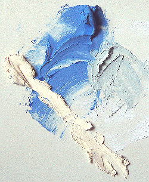

Le
plâtre comme liant
|
Le
plâtre est traité sur plusieurs pages.
L'article
Plâtre du glossaire joue le rôle de portail.
Cliquer
ici. |
Signalons
l'importante contribution documentaire
de M. Marc Potin, DécoSystème/Plâtrière Vieujot
Platre.com, que nous
remercions
Le plâtre n'est pas seulement
une substance "plastique"
: il est liant, c'est-à-dire qu'il peut, tout comme la chaux,
"enfermer" des pigments (voir
ci-dessous).
Dans cet article où les
aspects chimiques de son utilisation sont particulièrement essentiels,
nous avons voulu commencer par décrire sa composition et sa fabrication.
Le mode d'emploi
"généraliste" du plâtre est exposé dans un autre article.
Cliquer
ici.
Ce texte-ci concerne
pratiquement toutes les utilisations du plâtre (modelage, moulage,
fresque et "techniques mixtes", décoration, etc.) car rien n'empêche le
sculpteur, le peintre ou le décorateur d'exploiter ses propriétés
liantes.
|
Composition,
fabrication du plâtre
En
quoi le plâtre est-il un liant ?
Avantages
et inconvénients
Mise
en oeuvre comme liant
Séchage,
finition, protection, conservation
Interactions
chimiques |
Composition,
fabrication du plâtre
Lire de préférence en premier l'article
Gypse du glossaire.
Le plâtre courant est principalement
produit avec du
gypse, minerai naturel fort transparent. Sa
composition est un peu plus complexe - et variable - que celle de la chaux
qui d'ailleurs pourrait en être extraite (information non confirmée). Leur base à tous deux est le calcium,
mais la particularité du plâtre est d'être un sulfate.
Sa fabrication est très
simple : du gypse est chauffé à 200°C (variétés moyennes -
voir ci-dessous). A cette température - plus ou moins
50°C environ -, il perd la
majeure partie de son eau. A 300°C, la substance obtenue ne serait plus
utilisable (toujours pour une variété moyenne). De même, une température trop basse donne une substance trop peu
soluble.
On a
donc :
Gypse (pierre) = CaSO4 - 2(H2O)
--- réchauffement 200°C --->
CaSO4 - 0,5(H2O) = plâtre (poudre fine)
Le "0,5(H2O)"
qu'elle contient peut
surprendre. Il correspond à une distribution par paires dont une molécule
contient H2O et l'autre non.
La poudre obtenue (dont le nom
scientifique est la bassanite) a une finesse qui est une particularité importante
du plâtre. Il peut être nécessaire de lui adjoindre du sable ou d'autres
éléments durs pour obtenir une sorte de mortier.
Ce mortier, intéressant en peinture notamment, n'a guère de valeur pour ce qui
concerne la solidité, le sable jouant plutôt un rôle fragilisant.
Il est à noter que lorsque le plâtre
a de nouveau fixé de l'eau, il reforme bien un gypse.
(SO4 Ca) (H2O)2 donne par cuisson (SO4 Ca) (H2O)1/2 donne par sur-cuisson (SO4 Ca)
qui donne par gâchage (SO4 Ca) (H2O)2
CaSO4 - 0,5(H2O)
--- gâchage --->
CaSO4 - 2(H2O)
Cependant les cristaux de
ce gypse renaissant sont devenus microscopiques. Pour cette raison (une multitude de
facettes produisant toujours un aspect opaque), il perd la transparence du minéral
originel.
Qualités
Elles varient en particulier suivant la température de
cuisson : 200 °C pour les plâtres les plus courants, jusqu'à 600 °C pour les
plus rares. Des températures encore plus élevées sont possibles mais ne sont
plus utilisées actuellement - d'ailleurs, à partir d'un certain seuil, on
obtient de la chaux par dégagement du soufre. Ces plâtres plus cuits sont dits
"surcuits" ou anhydrite (CaSO4) car ils ont perdu encore plus d'eau
que le plâtre classique (hémihydrate). Ils ont une réaction de prise plus lente
que les plâtres à basse température.
En
quoi le plâtre est-il un liant ?
Nous avons l'habitude, sans le savoir, depuis l'école, d'employer des peintures dont
l'élément liant enserre le pigment dans un réseau macromoléculaire. Dans le
cas du plâtre, le réseau est cristallin donc nettement moins souple, mais le processus est
identique : lors du séchage, les cristaux de bassanite
s'assemblent et emprisonnent le pigment.
Avantages
et inconvénients
La blancheur du plâtre (illustration ci-dessous) limite son utilisation picturale, mais elle peut être mise à profit
chromatiquement parlant. Par contre, sa fragilité et son poids sont des handicaps définitifs qui imposent un support dur (pierre,
béton, bois) ou des renforts ainsi qu'un conditionnement particulièrement soigné
dans le domaine du transport - quand celui-ci est possible !
Au chapitre des avantages, le plus important est sans aucun doute la
plasticité. Suivent la finesse (extrême avec les variétés
synthétiques), la facilité d'emploi et le prix, imbattable.
Mise en
oeuvre comme liant
Note : l'emploi général du plâtre
est exposé dans une section de l'article Le
plâtre (modelage, moulage)

Cette mise en oeuvre est très simple : il suffit de bien mélanger le pigment
au plâtre en poudre avant de l'incorporer dans l'eau en pluie ou l'ajouter en dernier, ou les deux. L'important est de bien gâcher.
En fonction de sa fluidité, le
travail se rapprochera de la peinture à fresque (pâte plutôt liquide) ou du
modelage... à moins qu'il ne s'agisse de couler ce plâtre teinté dans un
moule.
Sur l'image, les couleurs sont un bleu outremer foncé, un jaune
de Naples imitation et le mélange des deux couleurs, à droite.
Une petite quantité de liant vinylique, acrylique
(incorporer dans l'eau avant de tremper le plâtre) ou de colle à carreaux de
plâtre permet d'accroître la solidité du matériau tout en l'assouplissant
légèrement.
Un alcool comme la glycérine ne réagira pas
chimiquement. Son rôle, généralement assouplissant, n'est pas forcément
opérationnel dans le cas du plâtre dont la structure cristalline diffère de
celle des liants classiques. Au contraire, elle ne fera que diminuer la
proportion de matière liante et accentuera le retrait. Un liant acrylique ou
vinylique sera en principe plus efficient.
Les huiles à peindre peuvent être adjointes à la
pâte, mais elles ont tendance à brunir (de plus en plus avec le temps) car
elles réagissent en présence d'un matériau alcalin comme le plâtre (voir Saponification).
Les corps acides peuvent être employés afin de provoquer la formation
de sels, réaction pouvant être assez brutale et nécessitant des tests
préalables.
Par contre, afin d'éviter les mauvaises surprises lors d'un emploi
"normal" du plâtre mêlé de pigments, nous conseillons à nos
visiteurs de restreindre leur palette à celle de la peinture à fresque (lire
article).
Séchage,
finition, protection, conservation
Le temps de séchage - nommé de préférence "temps de prise" -
varie en fonction de la provenance du produit. Le plâtre de Paris,
particulièrement chargé en gypse, est à prise
rapide.
Pour vernir ou "fixer" une oeuvre peinte de cette manière, il est conseillé de
procéder par pulvérisation pour ne pas "emporter",
"drainer" la poussière de plâtre, conséquence inévitable d'une
application à la brosse. Ce conseil n'est valable que pour les travaux précis. Un vernissage n'est
d'ailleurs pas toujours nécessaire. Bien souvent, on emploiera plutôt des
patines - dont l'effet chromatique combiné à la pigmentation du plâtre doit
être réfléchie. Noter d'ailleurs qu'une patine à l'encaustique (voir Encaustique
à froid) peut apporter un peu de transparence.
En ce qui concerne les travaux moins précis, il faut signaler la
possibilité de polir et lustrer le plâtre. Sous réserve de confirmation
expérimentale, après une telle opération, une très légère transparence,
sensible à une épaisseur de l'ordre d'un demi millimètre, pourrait être
acquise sans recourir au moindre adjuvant.
La bonne conservation du plâtre, tant
sous forme de poudre que sous forme de statue, est directement fonction de
l'humidité de l'environnement car il s'agit d'un produit hygroscopique.
Elle est à éviter, c'est la règle numéro un. Le plâtre ne supporte guère
d'être déposé près d'un sol ou d'un mur humide. Mais il ne faut pas non plus
trop exagérer : le plâtre supporte un peu d'humidité et de plus, il est
rarement exposé directement à celle-ci car il est le plus souvent peint ou
enduit.

Interactions
chimiques
Attention : bien que ce ne soit pas un cas commun, certains plâtres peuvent
contenir du soufre libre. Ils sont alors incompatibles avec les pigments et produits au plomb.
Le danger,
mentionné par certains auteurs, de voir des sels se
former progressivement sur la surface n'est réel qu'en milieu acide. Par
contre, il vaut mieux veiller à éviter les eaux trop chlorées lors du
gâchage. Voir Formation des sels.
Retour
début de page